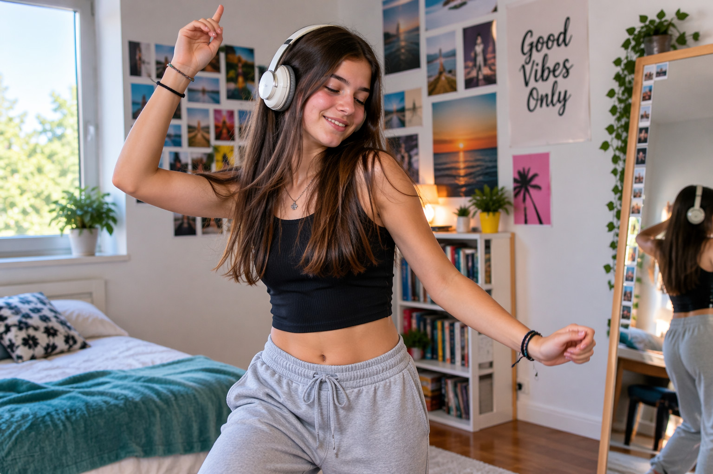
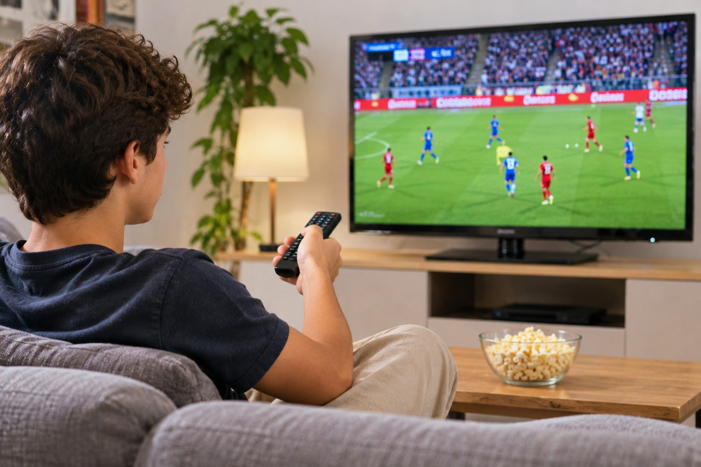

ASCOLTARE
to listen
Ascolto la musica che mi piace.
Coniuga il verbo ↗Hobbies and leisure activities
12 verbi utili · Livello A1–A2
to listen
Ascolto la musica che mi piace.
Coniuga il verbo ↗
to dance
Ballo con i miei amici.
Coniuga il verbo ↗to cook
Cucino piatti semplici.
Coniuga il verbo ↗to paint
Dipingo un paesaggio.
Coniuga il verbo ↗to draw
Disegno un paesaggio.
Coniuga il verbo ↗to go hiking
Faccio escursionismo nel tempo libero.
Coniuga il verbo ↗to do sports
Faccio sport quasi tutti i giorni.
Coniuga il verbo ↗to play video games
Gioco ai videogiochi con i miei amici.
Coniuga il verbo ↗
to watch
Guardo una partita in televisione.
Coniuga il verbo ↗to read
Leggo un libro interessante.
Coniuga il verbo ↗to swim
Nuoto in piscina il sabato.
Coniuga il verbo ↗to play an instrument
Suono la chitarra nel tempo libero.
Coniuga il verbo ↗